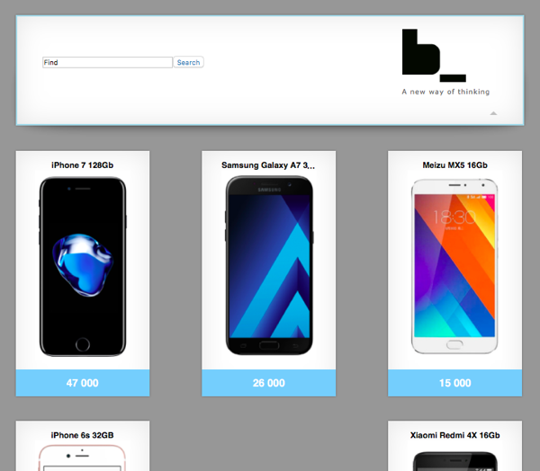
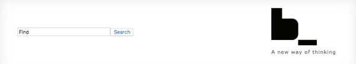
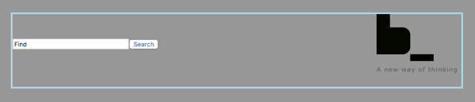
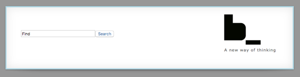
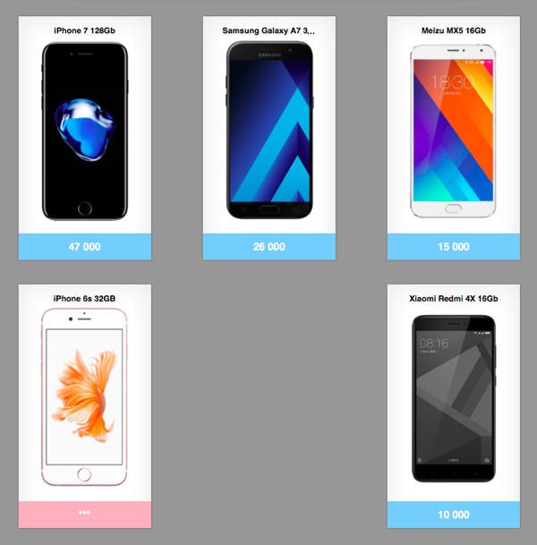
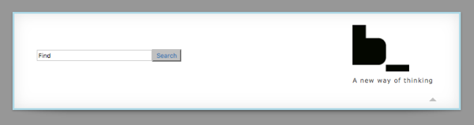

Создаем статический БЭМ-проект
Эта статья рассказывает о том, как создать проект с использованием БЭМ-платформы. Для изучения материала, представленного в статье, необходимо знание JavaScript.
Мы шаг за шагом создадим страничку каталога товаров, используя принципы БЭМ в CSS, возможностью писать декларативный JavaScript с использованием фреймворка i-bem.js и шаблонизатора BEMHTML.

Зависимости
Git Bash — для пользователей операционной системы Windows.
Создание проекта
Рекомендуемый способ создания статических БЭМ-проектов — использовать шаблонный репозиторий project-stub. Project Stub содержит необходимый минимум конфигурационных файлов.
Чтобы создать проект:
Склонируйте
project-stub.git clone https://github.com/bem/project-stub.git --depth 1 test-projectПерейдите в директорию
test-project:cd test-projectУстановите зависимости:
npm install
Соберите проект:
npm run build
Примечание. Сборка осуществляется сборщиком ENB. Конфигурация процесса сборки определена в файле
.enb/make.js.Запустите сервер:
npm start
При запуске приложения в терминале выведется сообщение о том, что сервер выполняется на порту 8080:
Server started at 0.0.0.0:8080
Откройте браузер и введите адрес localhost:8080/desktop.bundles/index/index.html.
Структура проекта
.enb/ # Конфигурационные файлы для сборщика ENB
common.blocks/ # Базовые реализации блоков
desktop.blocks/ # Реализации блоков для десктопных браузеров
desktop.bundles/ # Директория бандлов проекта
node_modules/ # Установленные модули Node (пакеты)
.bemrc # Конфигурация для плагинов BEM SDK
.editorconfig # Конфигурация EditorConfig
.gitignore # Исключение файлов и директорий в Git
.travis.yml # Автоматический запуск линтеров в Continuous Integration
gulpfile.js # Конфигурация Gulp
package.json # Описание проекта для npm
README.md # Текстовое описание проекта
Декларация проекта определяется вручную в BEMJSON-файле:
desktop.bundles/
index/
index.bemjson.js # Декларация страницы index.html
...
Уровни переопределения содержат реализации блоков, элементов и модификаторов:
common.blocks/;desktop.blocks/.
Шаг за шагом
В этом разделе кратко описывается последовательность действий для создания страницы каталога товаров.
Для удобства определим, что страница будет состоять из шапки и тела — основной части.
Разместим на странице шапку. В терминах БЭМ-методологии она будет представлена блоком
head. Для этого задекларируем блок в BEMJSON-файле и создадим его в файловой структуре, напишем первые CSS-правила, обеспечивающие раскладку.Используем готовые блоки библиотеки для создания формы поиска и логотипа в шапке. Представим логотип блоком
logoи сделаем картинку ссылкой на сайт bem.info. Переопределим существующие блоки библиотек с помощью технологий CSS и BEMHTML.В теле страницы разместим список товаров с помощью BEMHTML-шаблонов. Представим список блоком
goodsв BEMJSON-декларации. В BEMHTML-шаблоне зададим разметку элементам блока и откорректируем внешний вид CSS-правилами.Укажем зависимости блоков в файле
deps.js, чтобы шаблоны, JavaScript-реализация и CSS-правила применились при сборке к нужным нам блокам.Подключим сторонние библиотеки в проект и расширим их функциональность с помощью доопределения JavaScript-функциональности.
Рассмотрим варианты микса блоков и элементов.
И, напоследок, создадим новую страницу и запустим полную сборку проекта.
Внесение изменений в страницы
Сейчас в проекте есть одна страница index.html, которую можно открыть в браузере: http://localhost:8080/desktop.bundles/index/index.html.
Изначально index.html содержит примеры блоков, которые наглядно демонстрируют разнообразие библиотеки bem-components, подключенной к project-stub.
Важно Убедитесь, что путь к странице указан полностью. В противном случае, могут возникнуть проблемы с относительными путями до статики.
Описание блока в BEMJSON
Для начала разместим на странице шапку, добавив декларацию блока head в BEMJSON-файл страницы.
{ block: 'head' }
module.exports = {
block: 'page',
title: 'Title of the page',
favicon: '/favicon.ico',
head: [
{ elem: 'meta', attrs: { name: 'description', content: '' }},
{ elem: 'css', url: 'index.min.css' }
],
scripts: [{ elem: 'js', url: 'index.min.js' }],
content: [
{ block : 'head' }
]
};
Перезагрузив страницу, вы увидите, что в её HTML-представлении появился соответствующий <div> с классом head.
<!DOCTYPE html>
<html class="ua_js_yes">
<head>...</head>
<body class="page">
<div class="head"></div>
<script src="index.min.js"></script>
</body>
</html>
В шапку мы поместим форму поиска, логотип и раскладку, располагающую содержимое как нужно.
Сначала в BEMJSON-описании страницы внутрь блока head поместим блок layout с двумя элементами: left и right.
{
block: 'head',
content: {
block: 'layout',
content: [
{
elem: 'left',
content: 'left here'
},
{
elem: 'right',
content: 'right here'
}
]
}
}
Пример кода index.bemjson.js.
В HTML-представлении страницы появится необходимая разметка. Обновите страницу, чтобы увидеть разметку:
<!DOCTYPE html>
<html class="ua_js_yes">
<head>...</head>
<body class="page">
<div class="head">
<div class="layout">
<div class="layout__left">left here</div>
<div class="layout__right">right here</div>
</div>
</div>
<script src="index.min.js"></script>
</body>
</html>
Теперь для блока layout необходимо прописать CSS-правила. В БЭМ-терминах будем называть это реализацией блока в технологии CSS.
Важно В project-stub по умолчанию используется PostCSS.
Создание блока
Для создания директории блока и в ней технологии CSS воспользуемся командой bem create bem create.
bem create -l desktop.blocks -b layout -T css
где
-l directoryName— указывает на уровень переопределения;-b blockName— определяет имя директории блока, для которого создается файл технологии. Если директории с таким именем ещё не существует, создает её;-T technologyName— создает указанный файл технологии реализации блока.
Таким образом, команда создаст директорию для блока layout на уровне переопределения desktop.blocks и файл desktop.blocks/layout/layout.css для него, в котором уже есть селектор, совпадающий с именем блока.
Альтернативный, более лаконичный способ создать этот же файл:
bem create desktop.blocks/layout.css
Правило нужно дополнить соответственно внешнему виду блока. Сейчас можно просто скопировать пример.
Блоки можно создавать и вручную: создадим директорию desktop.blocks/layout и в ней разместим необходимые нам файлы технологий реализации блока.
Блок logo будет состоять из картинки и слогана. Для этого задекларируем блок logo в блоке head файла desktop.bundles/index/index.bemjson.js.
{
elem: 'right',
content: {
block: 'logo',
content: [{
block: 'image',
url: '//varya.me/online-shop-dummy/desktop.blocks/b-logo/b-logo.png'
},
{
elem: 'slogan',
content: 'A new way of thinking'
}]
}
}
Пример кода index.bemjson.js.

Использование блоков из библиотеки
Блоки поисковой формы input и button создавать самостоятельно не нужно. Они уже реализованы в библиотеке bem-components, которая подключается в project-stub по умолчанию. Достаточно просто задекларировать блоки на странице desktop.bundles/index/index.bemjson.js.
{
elem: 'left',
content: [
{
block: 'input',
name: 'text',
val: 'Find'
},
{
block: 'button',
mods: { type: 'submit' },
content: 'Search'
}
]
}
Пример кода index.bemjson.js.
Добавим обработку пользовательского запроса Яндексом:
{
elem: 'left',
content: {
tag: 'form',
attrs: { action: 'https://yandex.ru/yandsearch' },
content: [
{
block: 'input',
name: 'text',
val: 'Find'
},
{
block: 'button',
mods: { type: 'submit' },
content: 'Search'
}
]
}
}
Пример кода index.bemjson.js.

Используя блок link из той же библиотеки, мы сделаем картинку и слоган ссылкой на сайт bem.info:
{
elem: 'right',
content: {
block: 'logo',
content: [
{
block: 'link',
url: 'https://ru.bem.info',
content: [
{
block: 'image',
url: 'http://varya.me/online-shop-dummy/desktop.blocks/b-logo/b-logo.png'
},
{
elem: 'slogan',
content: 'A new way of thinking'
}
]
}
]
}
}
Пример кода index.bemjson.js.
Модификация блоков библиотек
Модификация в CSS
Блоки input и button можно модифицировать, написав необходимые CSS-правила для каждого из них.
CSS мы поместим в блок input на уровне переопределения desktop.blocks:
bem create -l desktop.blocks -b input -T css
Пример кода input.css.
То же самое для блока button:
bem create -l desktop.blocks -b button -T css
Пример кода button.css.
Добавим необходимые CSS-правила для блока link.
bem create -l desktop.blocks -b link -T css
Пример кода link.css.

Модификация BEMHTML
Чтобы отцентрировать весь материал на странице, нужно создать дополнительный HTML-элемент — контейнер. Для этого необязательно создавать специальный блок. Проще и правильнее модифицировать шаблон для блока page на уровне переопределения desktop.blocks, который генерирует выходной HTML для всей страницы.
В качестве шаблонизатора используем BEMHTML.
bem create -l desktop.blocks -b page -T bemhtml.js
BEMHTML-шаблоны могут не просто определять теги, которыми представлен блок, и их атрибуты, но и генерировать разметку страницы.
В созданном файле desktop.blocks/page/page.bemhtml.js необходимо написать код, оборачивающий контент блока в дополнительный контейнер.
block('page')(
content()(function() {
return {
elem: 'inner',
content: applyNext()
};
})
);
Пример кода page.bemhtml.js.
<!DOCTYPE html>
<html class="ua_js_yes">
<head>...</head>
<body class="page">
<div class="page__inner">
<div class="head">
<div class="layout">...</div>
</div>
<script src="index.min.js"></script>
</div>
</body>
</html>
Для новой разметки блока page создадим свои CSS-правила:
bem create -l desktop.blocks -b page -T css
Контент для файла desktop.blocks/page/page.css можно скопировать из примера.
Чтобы шапка была заметна на странице, поместим её в рамку. Для этого создадим CSS-правила для блока head.
bem create -l desktop.blocks -b head -T css
Контент для файла desktop.blocks/head/head.css можно скопировать из примера.

BEMHTML-шаблоны
Разместим на странице под шапкой список товаров. Он представлен в BEMJSON-декларации страницы блоком goods. Декларация содержит данные о товарах: название, картинку, цену и адрес.
{
block: 'goods',
goods: [
{
title: 'iPhone 7 128Gb',
image: 'start-with-project-stub__iphone7.png',
price: '47 000',
url: '/'
},
{
title: 'Samsung Galaxy A7 32Gb',
image: 'start-with-project-stub__samsung.png',
price: '26 000',
url: '/'
},
{
//...
}
]
}
Пример кода index.bemjson.js.
Чтобы эти данные превратились в нужную разметку, блок должен быть реализован в технологии BEMHTML. Для корректировки внешнего вида применим CSS-правила. Воспользуемся командой bem create, чтобы создать блок сразу в двух технологиях:
bem create -l desktop.blocks -b goods -T bemhtml.js -T css
В BEMHTML-шаблоне блока desktop.blocks/goods/goods.bemhtml.js нужно написать код, который превратит данные, задекларированные в BEMJSON, в элементы блока. А также, пользуясь режимом tag, указать, как будет представлен блок и его элементы в HTML-структуре страницы.
block('goods')(
tag()('ul'),
// здесь опущена часть кода, см. полный вариант по ссылке ниже
elem('item')(
tag()('li')
),
elem('title')(
tag()('h3')
),
elem('image')(
tag()('img'),
attrs()(function() {
return { src: this.ctx.url };
})
),
elem('price')(
tag()('span')
)
);
Код пример goods.bemhtml.js.
<!DOCTYPE html>
<html class="ua_js_yes">
<head>...</head>
<body class="page">
<div class="page__inner">
<div class="head">...</div>
<ul class="goods">
<li class="goods__item">
<h3 class="goods__title">iPhone 7 128Gb</h3>
<img class="goods__image" src="start-with-project-stub__iphone7.png"/>
<span class="goods__price">259</span>
</li>
<li class="goods__item">...</li>
<li class="goods__item">...</li>
</ul>
<script src="index.min.js"></script>
</div>
</body>
</html>
Шаблон может создавать не только HTML-элементы блока, но и другие блоки. Например, цену товара можно сделать ссылкой, используя для этого блок link из библиотеки bem-components.
Чтобы избежать вложенных селекторов при оформлении этой ссылки стилями, пометим ее как элемент блока goods.
{
elem: 'price',
content: {
block: 'link',
mix: [{ block: 'goods', elem: 'link' }],
url: item.url,
content: item.price
}
}
Пример кода goods.bemhtml.js.
<ul class="goods">
<li class="goods__item">
<h3 class="goods__title">iPhone 7 128Gb</h3>
<img class="goods__image" src="start-with-project-stub__iphone7.png"/>
<span class="goods__price">
<a class="link goods__link" href="/">259</a>
</span>
</li>
//...
<li class="goods__item">...</li>
<li class="goods__item">...</li>
</ul>
Нужно визуально выделить на странице новые товары. Для этого добавим проверку модификатора new в шаблон: пример.
CSS-правила для блока можно скопировать отсюда.
Создавать блок отдельно в технологии CSS не нужно, потому что мы уже создали его командой bem create.

Зависимости блоков
Помимо декларации нужно гарантировать подключение к блокам страницы шаблонов, CSS и JavaScript. Для этого необходимо указать зависимости.
Делается это с помощью представления блока в технологии deps.js.
bem create -l desktop.blocks -b goods -T deps.js
Так как блок link объявляется не в BEMJSON-декларации, а в шаблоне BEMHTML, необходимо добавить блок link в зависимости блока goods.
Воспользуемся нестрогой зависимостью shouldDeps, указав блок link.
({
shouldDeps: [
'link'
]
})
Пример кода goods.deps.js.
Подключение библиотек
Представим шапку и каждый товар модными прямоугольниками с тенью. Блок для этого мы позаимствуем из сторонней библиотеки j.
Там есть всего один блок, который называется box — он делает то, что нам нужно.
Установим зависимую библиотеку. Сделаем это с помощью следующей команды:
npm install tadatuta/j --save-dev
Необходимо указать, что данная библиотека должна использоваться при сборке страниц. Это делается в файле .enb/make.js:
levels = [
{ path: 'node_modules/bem-core/common.blocks', check: false },
{ path: 'node_modules/bem-core/desktop.blocks', check: false },
{ path: 'node_modules/bem-components/common.blocks', check: false },
{ path: 'node_modules/bem-components/desktop.blocks', check: false },
{ path: 'node_modules/bem-components/design/common.blocks', check: false },
{ path: 'node_modules/bem-components/design/desktop.blocks', check: false },
{ path: 'node_modules/j/blocks', check: false },
'common.blocks',
'desktop.blocks'
];
Пример кода .enb/make.js.
При изменении конфигурации проекта необходимо перезапустить сервер. Текущий процесс придется прервать (Ctrl + C) и снова ввести команду запуска сервера.
Миксы блоков и элементов
Теперь блок box можно использовать. Мы применим его к шапке страницы, чтобы добавить белый фон с тенью. Для этого смиксуем блок head с блоком box, используя метод mix в BEMJSON-декларации страницы.
Один из способов смешения — описать метод mix во входных данных (BEMJSON).
В данном случае нужно смешать блок head с блоком box:
{
block: 'head',
mix: [{ block: 'box' }],
content: ...
}
Пример кода index.bemjson.js.
<!DOCTYPE html>
<html class="ua_js_yes">
<head>...</head>
<body class="page">
<div class="page__inner">
<div class="head box">
<div class="layout">...</div>
</div>
<ul class="goods">...</ul>
<script src="index.min.js"></script>
</div>
</body>
</html>

Миксовать можно не только блоки, но и элементы с блоками. И не только в BEMJSON-декларации страницы, но также в шаблонах реализации конкретного блока.
Сделаем, чтобы каждый товар из списка имел такое же оформление, как и шапка страницы. Для этого в шаблоне блока goods смиксуем каждый элемент item с блоком box из только что подключенной библиотеки.
// ...
elem: 'item',
elemMods: { new: item.new && 'yes' },
mix: [{ block: 'box' }],
// ...
Пример кода goods.bemhtml.js.
<!DOCTYPE html>
<html class="i-ua_js_yes">
<head>...</head>
<body class="page">
<div class="page__inner">
<div class="head box">...</div>
<ul class="goods">
<li class="goods__item box">...</li>
<li class="goods__item box">...</li>
<li class="goods__item box">...</li>
<li class="goods__item goods__item_new_yes box">...</li>
<li class="goods__item box">...</li>
//...
</ul>
<script src="index.min.js"></script>
</div>
</body>
</html>
Запишем блок box в зависимости блока goods.
({
shouldDeps: [
'link',
'box'
]
})
Пример кода goods.deps.js.

Декларативный JavaScript
Блоки с JavaScript-функциональностью
Блок box, который появился на странице проекта благодаря подключенной сторонней библиотеке, предоставляет также и динамическую JavaScript-функциональность — он умеет сворачиваться.
Для использования этой функциональности в шапке необходимо изменить описание блока head, указав, что блок box имеет JavaScript-реализацию.
mix: [{ block: 'box', js: true }]
Пример кода index.bemjson.js.
Также разместим внутри блока элемент switcher:
block: 'head',
mix: [{ block: 'box', js: true }],
content: [
{
block: 'layout',
//...
},
{
block: 'box',
elem: 'switcher'
}
]
Пример кода index.bemjson.js.
Теперь в блоке head есть стрелочка, которая умеет его сворачивать и разворачивать.

Модификация JavaScript
Расширим предлагаемую библиотекой JavaScript-функциональность блока box. Сделаем так, чтобы он сворачивался не только по вертикали, но и по горизонтали. При этом вносить изменения в чужую библиотеку мы не можем. Но благодаря тому, что JavaScript блока box написан с использованием декларативного фреймворка i-bem.js, есть возможность изменить его поведение.
bem create -l desktop.blocks -b box -T js
В файле desktop.blocks/box/box.js нужно описать реакцию блока на установку модификатора с помощью специального свойства onSetMod.
В данном случае нужно реагировать на установку и снятие модификатора closed:
modules.define('box', ['i-bem-dom'], function(provide, bemDom) {
provide(bemDom.declBlock(this.name, {
onSetMod : {
'closed': {
'yes': function() {
// some functionality here
},
'': function() {
// some functionality here
}
}
}
}));
});
Например, можно добавить анимацию, как показано в примере ниже.
Пример кода box.js.
Создание новых страниц
Страницы — это тоже блоки, но на уровне переопределения desktop.bundles. Поэтому для их создания тоже можно воспользоваться командой bem create.
Создадим страницу contact:
bem create -l desktop.bundles -b contact -T bemjson.js
Новую страницу можно посмотреть по адресу http://localhost:8080/desktop.bundles/contact/contact.html.
Сервер соберёт её HTML-представление, JS- и CSS-файлы в момент первого открытия в браузере.
Полная сборка проекта
Всё то время, пока мы разрабатывали проект, работал режим сервера, в котором пересобирались только измененные части проекта, необходимые при обновлении страницы в браузере.
Для сборки проекта целиком можно воспользоваться командой:
npm run build
Подведем итоги
Первый практический опыт использования БЭМ-методологии показал нам только вершину айсберга всех возможностей работы с БЭМ-проектом.
Итак, в ходе изучения статьи мы узнали, как быстро и легко начать работу с собственным проектом, развёрнутым на базе шаблонного репозитория project-stub.
Основываясь на БЭМ-принципах разработки мы научились создавать новые и использовать существующие блоки библиотек, изменять их функциональность, стили и шаблоны.
Начали знакомство с БЭМ-инструментами, в частности, с ENB. Затронули шаблонизатор BEMHTML и лишь упомянули о возможности использования декларативного фреймворка i-bem.js.